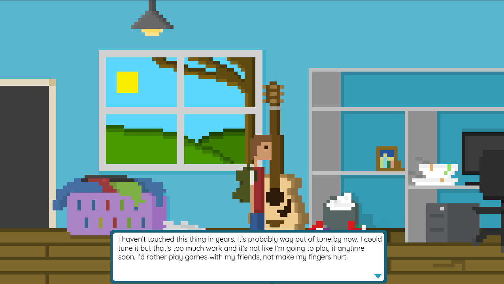
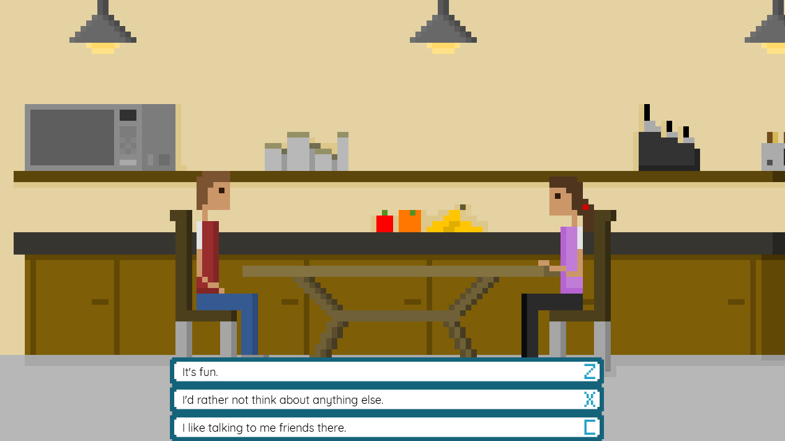
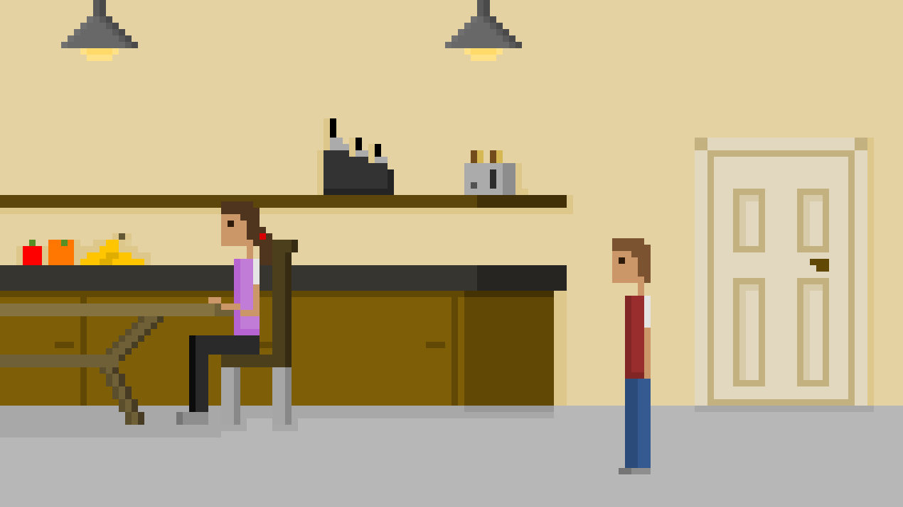
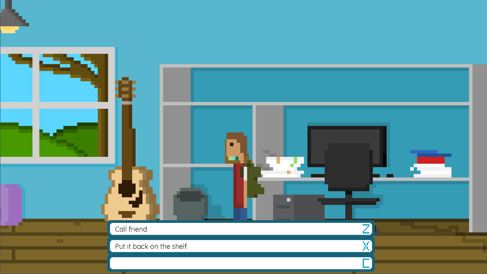

My final project was a game called Interconnected Isolation. I worked on this game with Christopher Trevisan.
This premise of the game is that you are a character who is addicted to video games. As you progress through the story and read the dialogue, you can see what the consequences are. However, in this game, you also explore solutions to game addiction, and you are given a chance to see if you have improved.
GitHub:
   